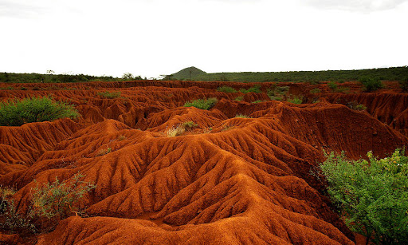

"2)SOIL EROSION " It is the displacement of the upper layer of soil which is in the form of soil degradation. this natural process is caused by the dynamic activity of erosive agents that is water , ice ,snow ,air , plants, animals and humans. 